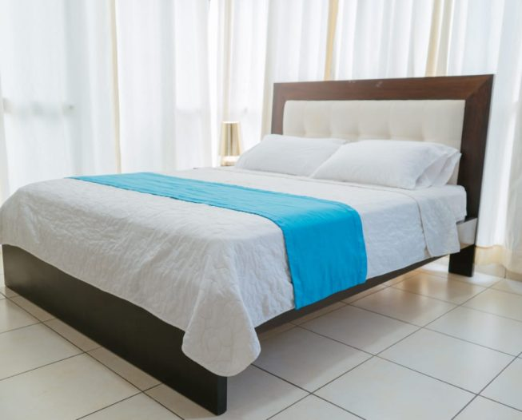

Hotel de Tunja SWEET DREAMS
Descripcion
esta ciudad, capital de Boyacá está cargada de planes variados y divertidos que con seguridad te harán querer volver más de una vez.
Si eliges este destino para gozarlo con tu familia, amigos o con tu pareja, tenemos la plena seguridad que será una gran experiencia para recordar.
Como hotel Nosotros apoyamos al turismo por esto mismo invitamos a nuestros huespedes a conocer los pueblos mas turisticos que nuestro hotel recomienda visitar( es de tener en cuenta que
nuestro hotel ofrece planes para visitar los pueblos turisticos todo esto lo encuentra en la seccion de ofertas y planes)Seguramente te vas a encontrar paisajes hermosos si decides
viajar por carretera a Tunja; hay montañas y valles que te irán conduciendo hasta una ciudad que refleja la historia de Colombia.
algunos de los maravillosositios que puedes visitar son:
- Reserva forestal el Malmo-sendero ecologico la germania
- parque el bosque de la republica y parque de la independencia
- catedral de tunja
- centro civico plaza real
- cojines del zaque
Es importante recordar que:
- No se admiten mascotas en el hotel.
- No siempre todos los hospedajes traen ofertas para mirar alguna oferta dar CLICk AQUI.
- Hay cupos limitados para el hospedaje al hotel.
Recuerda que si cuentes con traslado del aeropuerto a una de nuestras instalaciones del hotel debes ser puntual con el horaio establecido de lo contrario se dara un costo adicional.
Es recomnedable programar el vuelo correctamente para que tu trasnporte aereo o terrestre del hotel enten acorde con el horario de ingreso o de salida evitando asi aglomeracion de personas.
Programacion del hotel
- Horario desayuno (Tipo bufe): 7:00-9:30 AM
- Horario Almuerzo (Tipo bufe): 12:00-3:30 PM
- Horario cena (Tipo bufe): 6:30-9:30 PM
- Bar abierto las 24H
- aguas termanles de 10:00 a.m a 5:00 p.m
instalaciones
las instalaciones del hotel tienen un cupo limitado para los restaurante y se realizan presencialmente
- Restaurante de 8:00 a.m. a 10:30 p.m (Tipo bufe)
- aguas termanles de 10:00 a.m a 5:00 p.m
- spa de 9:00 a.m a 5:00 p.m
- bar de 9:00 a.m a 7:00 p.m
- Enfermería de 7:00 a.m. a 7:00 p.m
- Snack abierto de 11:00 a.m. a 5:00p.m
Habitaciones
Incluyen
- Aire acondicionado a control remoto
- caja seguridad
- Toallas y articulos de aseo
- Nevera tamño mediano
- 1 armario
- television satelital
- servicio al cuarto
- WI-FI
- adultos:2
- contiene:agua fria y caliente,aire acondicionad,caja de seguridad,
cerraduras electronicas con targeta de acceso de habitaciones
,parqueadero,sevicio de llamada al despertar,tv pagada, WI-FI - cama doble
- adultos:2
- contiene:agua fria y caliente,aire acondicionad,caja de seguridad,cerraduras electronicas
con targeta,hidromasaje-Tina de baño de acceso de habitaciones
,parqueadero,sevicio de llamada al despertar,tv pagada, WI-FI - cama doble
- adultos:1
- contiene:agua fria y caliente,aire acondicionad,caja de seguridad,cerraduras electronicas
con targeta de acceso de habitaciones
,parqueadero,sevicio de llamada al despertar,tv pagada, WI-FI - cama sencilla
- El huesped le dira cuanto quiere de cada porcion que se encuentre en el bufe
- El huesped tiene que comerse toda la porcion de comida servida de lo contrario se hara una multa de desperdicios de comida
- El huesped tiene que asistir al lugar de bufe a las horas indicadas por el hotel
- El huesped tiene que tener respeto por la persona que lo atiende asimismo la persona que lo atiende respeto por el huesped
- El huesped puede repetir de comida con la condicion de que se coma todo lo servido de lo contrario se le dara una multa de desperdicios de comida

Habitacion matrimonial

suite matrimonial
Habitacion Individual
Experencia Gastronomia

BUFE
El hotel de Tunja de sweet dreams cuenta con servicio de bufe de este modo todos los dias el usuario de nuestro hotel podra comer diferentes elementos todos los dias y a su gusto, este bufe cuenta con un servicio asistido donde un supervisor del hotel le servira la comida de forma proporcional donde quedara sastifecho. en caso que el usuario quiera repetir lo puede hacer sin ningun inconveninete ,esto solo lo podra hacer si se como todo lo servido de lo contrario se le tendra que dar una multa por parte del hotel por desperdicios de comida. esta multa se hace con el fin de consientizar a las personas sobre las porciones que se sirven y evitar desperdicios.